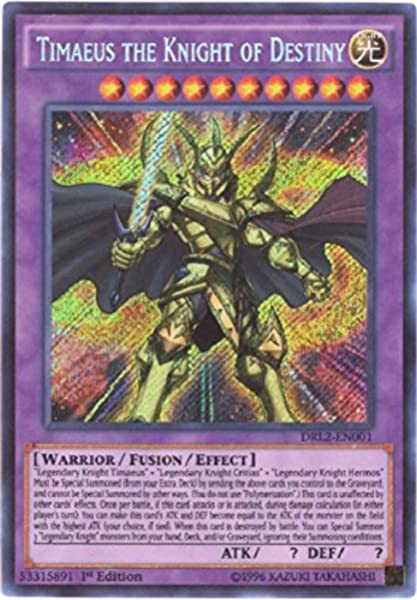

Timaeus is one of Plato's dialogues, mostly in the form of a long monologue given by the title character Timaeus of Locri, written c. 360 BC. The work puts forward speculation on the nature of the physical world and human beings and is followed by the dialogue Critias.
Participants in the dialogue include Socrates, Timaeus, Hermocrates, and Critias. Some scholars believe that it is not the Critias of the Thirty Tyrants who appears in this dialogue, but his grandfather, who is also named Critias. It has been suggested from some traditions (Diogenes Laertius (VIII 85) from Hermippus (3rd century BC) and Timon (c. 320 – c. 230 BC)) that Timaeus was influenced by a book about Pythagoras, written by Philolaus, although this assertion is generally considered false
Click here to go back to the main page.